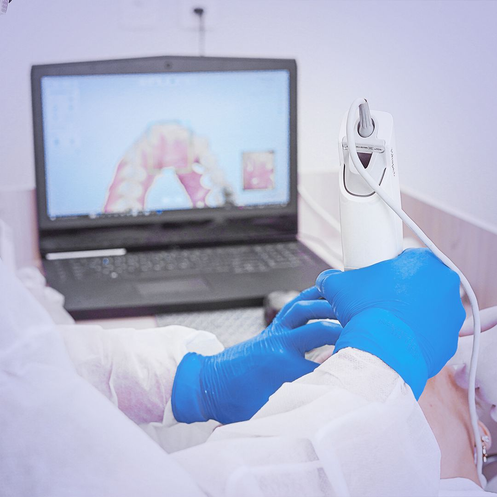

01
Digital Scanning
Say Goodbye To Traditional Impressions.
Our intraoral scanning technology captures highly detailed digital impressions of the teeth without the discomfort of traditional impression materials.
Digital scans help our dental team visualize the patient's teeth more clearly and create precise treatment plans.
Fast and comfortable digital impressions
Highly detailed digital models